[Click here for the final chart]
[Click here for the model]
Determine which tech companies are the most popular and which tech company internships are the most desired among university of Waterloo students. Keep reading below to find out which companies you should apply next!
I always wanted to use an API for my data visualization projects. After talking to a few people, it seems like Python libraries such as Beautiful Soup and the Postman application are the most common ways to call an API and build a dataset. I really like this dataset by Vlyubin which is why I decided to skip the data scraping step. I wanted to fetch my own data from the Linkedin API but it disabled profile look up on their API in 2015.
First, some information about the dataset. In Vlyubin's own words, "Only students who started in 2010 to 2013 (inclusive) and did at least 2 internships with industry being Computer Software or Internet at university of Waterloo are considered. This data was collected in August 2015 and contains 2392 students."
Determine the top 10 companies a student should apply to given their past experiences using supervised learning. To challenge myself and learn something new, I will use an ensemble Model in Python as I am studying a kernel about it this week.
I am aware there is a lack of features which I need to train my model as all I have
is a list of company names for each student. I want to extract as much value out of it as I can.
1. Clean the features by capitalizing the first letter of each company name only, removing duplicate students,
anything after a punctuation, ending space, between parenthesis, "Inc.", "Ltd." etc. This allows us to have a
smaller number of categories and ultimately increase the performance of the model and prevent overfitting. By adding this step,
I was able to remove 260 companies from the total number of unique companies (3560 => 3360).
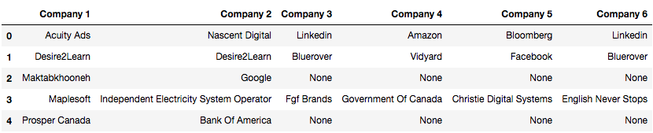
2. I know I can do better though. I remember reading a data scraping project
by Nadiah where she replaced strings by another if the exact string can be found in it, string that are the same except for up to 2 characters,
and compared the matching to more standardized lists. This can be particularly useful since I see a lot of "IBM" and "IBM Canada" for example.
By adding this step, I was able to go down by 372 companies (3360 => 2988)!
3. Create one data point for each internship excluding the first term. For example, if a student
worked at ABC in T1, XXX in T2, and RTC in T3, then he/she would get the following data points:
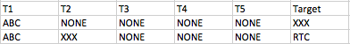
3. Add a few numerical features to the data set to quantify the companies. Here, I am simply checking how many times
each company appeared in each term. I decided to count how many 'None' in each term since this information is useful.
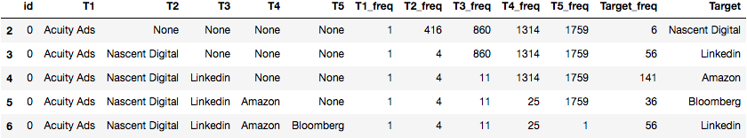
Now that I have my base features, I realize another problem in the project. There is no way I can give my
model 3400 values for each feature; it is too sparse! It does not take into consideration enough scenarios
and wouldn't be able to predict future data points correctly. I can attempt to solve it by adding more training data
(not available), group companies under larger categories (requires web scraping), improve my data cleaning (not worth the 80/20 time spent at
the moment) or derive more features. One way to do the latter is to see the data as a directed graph (which we did in part 1) and derive features from it.
This is an interesting idea and I will look into it for future enhancements.
I also realized there is no way to carry the information from each company at each step as it implies duplicating the same
work six times... a lot of boilerplate. I decided to build two models: one predicting the "attractiveness"
of each company and one predicting the top 10 companies depending on previous placements.
To get more information for each company, I decided to leverage one of the followings: Linkedin, Glassdoor or Wikipedia. The main features I want to
extract are the location of each company (both country and city), number of employees, salary, work culture,
type of company (tech, banking, finance, health, government), employees satisfaction, etc. I will try Glassdoor first.
This step took a lot of time as I am not very used to web scraping with JavaScript. Since Glassdoor add an unique id to each company in the
URL, I had to use the selenium library in Python. I decided to perform my data scraping in two steps: (1) Retrieve the link of each
company and (2) Retrieve the information of each company. Then as a follow up step, (3) I cleaned my data and created a scoring system for
each company.
Step 1:
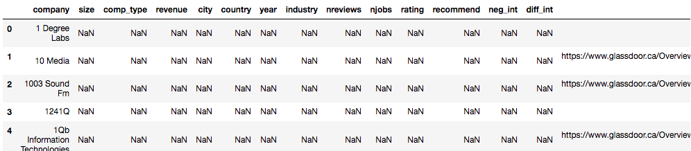
Step 2:
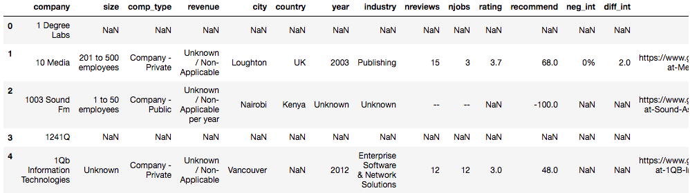
Step 3:
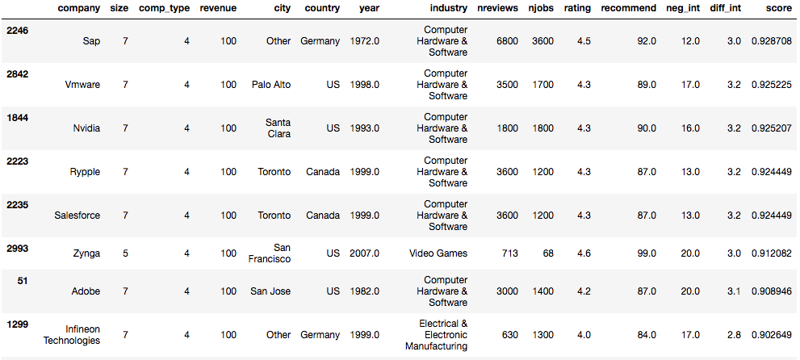
I won't go too much in detail about the scoring system, but the criteria where dependent on location of the head office, difficulty of interviews,
how recent is the company, what is the product, how much in revenue, etc. I am aware I used an additive model to calculate the score without looking
into the interaction of the scores. Also, since the information collected from Glassdoor is mostly tailored for full time jobs, there will be some
unexplained errors since it is not the same scope as my problem definition (companies for CS internships).
Let's do some data visualization!
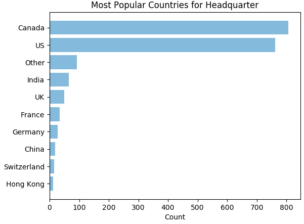
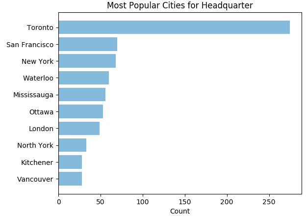
Finally, the scores of all companies, excluding those with no information on Glassdoor, create an almost normal distribution
with a mean around 0.60.
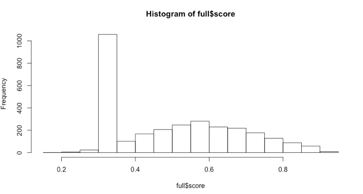
As you have seen in the data preparation part, the current dataset is:
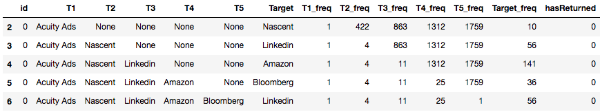
I then replaced the names of each company to their corresponding score:
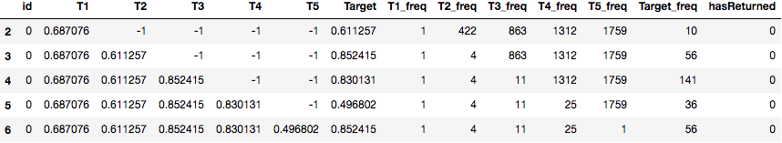
Next is the statistical learning step. I first randomized then designated 75% of the data to training and 25% to testing.
I then used an ensemble model by stacking (following the tutorial here)
three models: XGBoosting, ExtraTreesRegressor, and RandomForestRegressor which are all available within the Sklearn library.
The validation was done using a 4 fold cross validation. The model ends up having a mean absolute error of 0.15732525+0.00129982794535 in
average. The MAE calculated on the testing set is 0.1582475127257455 and 0.15327982095644518 on the training set, which suggests there is
a very low risk of overfitting. This model is far from perfect but it does show some interesting insights about future internship.
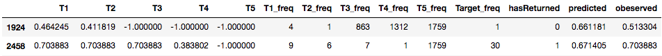
Finally, I switched back to the original labels for each entry inside the testing set:
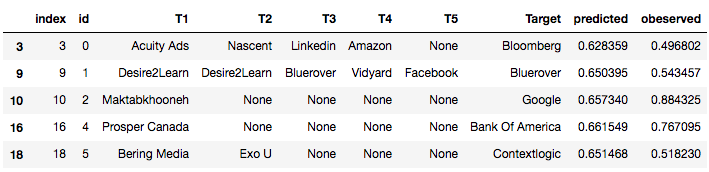